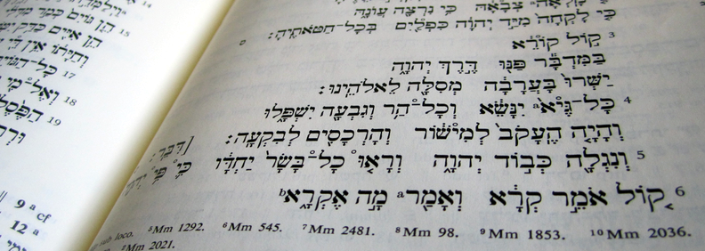

說文自序

大概二〇一一年的時候，我買了一本希伯來文的舊約聖經，想自學一下“原文”。心想，就是一門外語而已，沒有什麼難的。於是就開始斷斷續續地積累詞彙，分析例句，學習語法。剛開始還比較勤奮，後來就慢慢覺得枯燥無味，最初的熱情也逐漸冷淡了下來。偶爾想起，就拿起筆記翻看一下，但往往是第二天就再次將它束之高閣。
在爲數不多的幾次偶爾“發奮”的時候，我也曾想到過另外一個問題：
就算是我把希伯來語一直這樣學下去，最後熟練掌握幾千詞彙，能夠用希伯來語通讀舊約，那又如何呢？
其實聖經的字面意思在不同譯本中大多是相同或相近的。如果我用外語讀聖經，只不過是在閱讀的時候把承載經意的文字符號從一種語言換到了另一種語言而已，這種純粹的概念與詞彙的“映射轉換”並不會給我帶來太多新的認識。
比如石頭這個概念，不管我是讀到漢語的“石頭”，然後腦子由這個符號想到石頭這個概念，還是讀到英語的 stone 然後腦子裏（查詞彙表後）反應出石頭的概念，本質上差別不大。因爲我腦中的石頭的概念並沒有變，只不過這兩種語言中與之對應的文字符號不同而已。
除非一個人在外語的文化環境中生活一段時間。那樣，當他看到一個詞的時候，腦海裏對應的概念或許與母語中的“同義詞”所對應的概念有所不同。因爲承載這兩種語言的不同背景文化他都體驗過了。
一個最好的例子就是“麪包”這個詞：中國人聽到“麪包”後腦海裏所反應出來的東西，與美國人聽到 bread 腦海裏所想到的東西一定是不一樣的。而德國人聽到 Brot 後想到的，又與美國人腦海中的 bread 大相徑庭。
如果一個人沒有在美國生活過一段時間，就算他的英語再熟練，當他在聽到 bread 這個詞的時候，腦海裏也絕對不會反應出 bread 在美國“真正”的模樣和味道，雖然他知道這個詞“正確”的翻譯是“麪包”。
（所以，無論用任何語言，在研讀舊約聖經之前，最好是先了解一下對應年代希伯來人的文化背景。否則很多地方即便知道字面的意思，也會覺得莫名其妙。因爲腦海中由文字所“激發”出的內容往往是現代母語文化背景下的東西，與原文中作者想要表達的內容完全不同。）
當然，這種外語的背景文化“薰陶”在今天也可以通過閱讀，多媒體和網絡來進行。
而對於當時的我而言，這個文化背景的學習沒有必要非得通過希伯來文，完全可以借助相關的英文資料。而聖經字面上的翻譯版本又數不勝數，沒有必要看原文、查字典、然後自己再翻譯一遍。
既然這樣，那我爲什麼還要費勁地記單詞，學希伯來文呢？
總之，這些思考在我學習希伯來文的懶惰上又雪上加霜。而我真正靜下心來學習的次數也越來越少。轉眼幾年過去，那本聖經上早已落滿灰塵，不知去向。
---------------------------------------
大概是二〇一六年左右，我無意中在櫃子裏發現了那本蒙塵的希伯來舊約，覺得實在可惜，就想把這門外語再拾起來。於是我就又開始了三天打魚、兩天曬網的“自學生涯”。
直到後來的某一天，我無意中在網上聽到了 Jeff A. Benner 和 Mark Biltz 分享的一些關於古希伯來文的信息，就立刻被這些圖案所吸引。從那之後，便欲罷不能，對古希伯來文產生了濃厚的興趣。這些古老的圖案（或叫符號）好像可以把人帶到公元前一千五百年前的世界中去。很多創世的奧祕，甚至基督教的教義，居然都可以在這些古老的圖案中找到。
轉眼間，又是兩年過去了。雖然現在的我仍舊是希伯來文的初學者，但在這期間，我還是聽到並積累了一些有趣的、感人的、發人深省的（古）希伯來文知識和奧祕，對我個人幫助很大。
由於不希望這些奧祕被埋沒在筆記中，我搭建了“荒圖”這個平臺：
一是用它來整理、記錄一些瑣碎的古希伯來文知識；
二是希望把這些寶貴的奧祕在華語世界中傳播出去，讓更多的人得著建造。
---------------------------------------
幾點說明：
* 圖案符號的基本解釋方法均源自前輩同仁的研究，並非作者本人憑空捏造。重要的文獻和參考資料會在本文末尾列出。
* 由圖案組成的詞根的基本釋義和延伸大部分出自 AH Lexicon（見資料列表），少數是作者的“自由發揮”。
* 在寫每個詞根的釋義之前，作者都會在 Strong's Concordance 和聖經譯本中仔細驗證，如履薄冰。多方考證之後，才敢行文。無論如何，力求寫下的文字有根有據。
* 文章末尾的感想，大多是作者本人的主觀思考，並不一定代表正統的基督教教義。
* 原則上，這裏的每篇文章都是一個獨立的個體，與其他文章沒有內容上的延續關係。
這樣做的缺點是：很多圖案的解釋會在不同的文章中反復出現。而優點是：如果一篇文章被轉載，在其他地方看到它的讀者，就沒有必要先去翻看上一期的文章。
* 主頁的文章列表由下到上的排序，基本上是按照成文的時間先後。並不排除相鄰的兩篇文章有邏輯上的聯繫。
比如“有福”、“人”是詩篇第一篇的前兩個字，作者寫完“有福”後覺得“人”也很有意思，於是就寫了下一篇。（但兩篇都是獨立的，並非讀了第一篇之後才能讀懂第二篇。）
願榮耀歸給神，我們的主，耶穌基督！
二〇一八年二月 說文
---------------------------------------
常用資料、文獻和工具的鏈接：
http://www.ancient-hebrew.org/
http://www.ancient-hebrew.org/ahlb/
http://bible.fhl.net/
http://bible.fhl.net/new/sdict.html
http://elshaddaiministries.us/
http://cnbible.com/
文章未經特殊標明皆爲本人原創，未經許可不得用於任何商業用途。轉載請保持完整性並註明來源鏈接。
another.weblogger [at] gmail.com